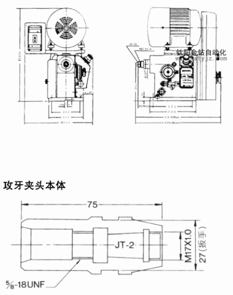

收藏本站
|
在線留言
|
常見問題解答
|
聯繫鈦陽
歡迎訪問鈦陽金鑽官方網站！
鈦陽首頁
公司簡介
標準機
非標機
定制攻牙機非標設備
多軸器
產品演示
新聞資訊
技術支持
聯繫鈦陽
當前位置：
主頁
>
標準機
>
自動攻牙機
>
JT1-204臥式自動攻牙機
文章出處：未知
責任編輯：kstyjz
人氣：
發表時間：2015-04-08 11:29

回轉一牙距的精密自動輸送組合：
裝置可替換的A、B齒輪配合A、B軸軸與主軸依牙距推進完全配合(以往沒有這種裝置)，這種組合有以下優點：
垂直穩定、精確而安全：精密度相當高，絲攻在前進與後退時不必出力就能運轉自如，而產制優良的加工物品，不會造成精細不同的螺紋產，對薄板的沖床加工製品或輕合金屬，合成樹脂等軟質製品也能製成完美的螺紋。絕無品質不穩定或不良現象產生。
採用等距攻牙，工件不會往上跳。
採用等距攻牙，工件不用壓緊，裝夾簡便、效率高
可高速連續循環運轉，堅固耐用：
採用特殊馬達、電子按鍵，能耐用一千萬轉次。
配置名稱
規格
JT1-204
自動
攻牙機
臥式型（鈦陽金鑽牌
）
重量約：
50KG
主軸沖程最大
：
45 mm
旋徑
：
330 mm
頭部之上下動距
：
260
mm
主軸和檯面最大距離：
350 mm
工作台尺寸：
225*230 mm
基礎面積：
415*300 mm
馬達：
3
相
1/2HP
4P
750W
主軸回轉數
：
50HZ
：
1340,760,420
60HZ
：
1600,900,500
(
轉
)
符合本機器使用之自動送給螺距：
(1)
每英吋的牙數：
64,56,48,44,40,32,28,24,20,18,16
(2)mm
0.2,0.25,0.3,0.35,0.4,0.45,
0.5,0.6,
0.7,0.75,0.8,0.9,1.0,1.25,（11.5）
螺牙直徑
：
M1-M10
多軸最大
能力
：
M
3X10
軸
M
4X5
軸
M
5X2
軸
適用於小零件之精密攻牙，附扭力限制之轉動機構，刀具不易斷誇。對沒有通孔攻牙更加適用。
※標準配件:
A
.工具箱1只
B
.牙距齒輪2組 (1組機台內，1組工具箱內，規格由客戶指定)。
路皎 經15250231221
上一篇：
JT3-231立式自動攻牙機
| 下一篇：
JT2-224臥式自動攻牙機
此文關鍵字：
攻牙機
自動
規格
配置
名稱
臥式
JT1-204
返回鈦陽首頁>>
相關資訊
JT1-203立式自動攻牙機
JT2-223立式自動攻牙機
JT3-231立式自動攻牙機
JT1-204臥式自動攻牙機
JT2-224臥式自動攻牙機
JT3-232臥式自動攻牙機
推薦產品
JT1-203立式自動攻牙機
JT2-223立式自動攻牙機
JT3-231立式自動攻牙機
JT1-204臥式自動攻牙機
推薦文章
影響電動攻牙機性能的
何以自動攻牙機可以做
攻螺紋前鑽底孔直徑和
鑽孔機如何選擇,台式自
攻牙油 百 科
自動鑽床自動攻牙機離
SPS-全自動鑽孔倒角攻牙
攻牙機原理,多功能機床
動力頭基本構造及相關
自動攻牙機深孔。小孔
最新資訊文章
影響電動攻牙機性能的
何以自動攻牙機可以做
攻螺紋前鑽底孔直徑和
鑽孔機如何選擇,台式自
攻牙油 百 科
攻牙機發展進程中〞急
三大因素影響自動攻牙
自動鑽床自動攻牙機離
台式攻牙機,台式鑽床
SPS-全自動鑽孔倒角攻牙